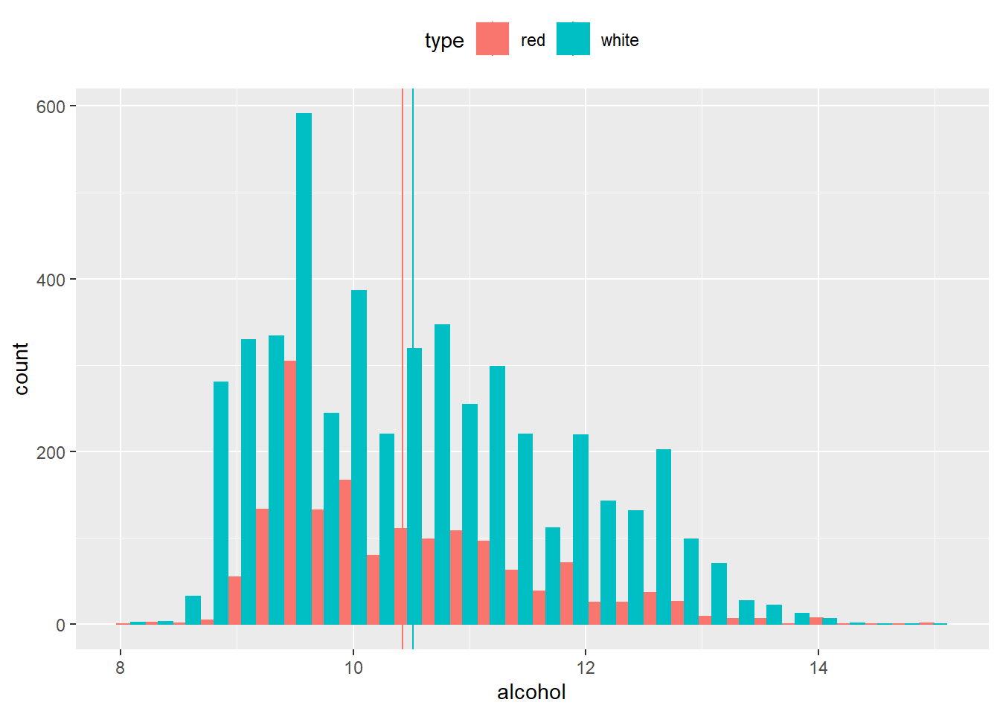
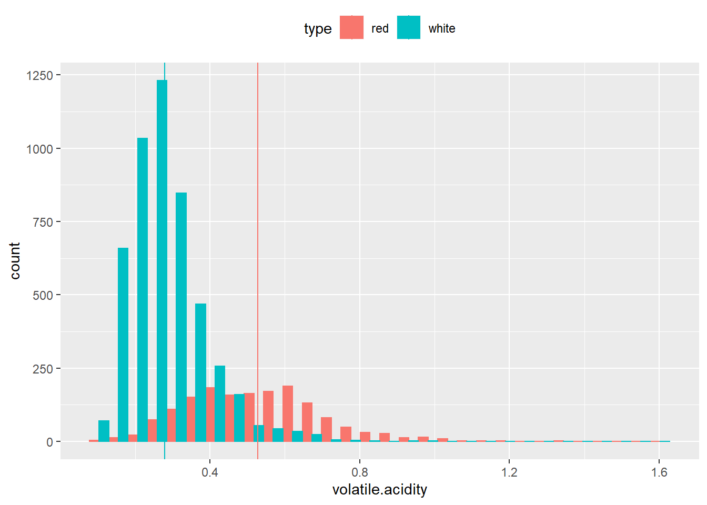
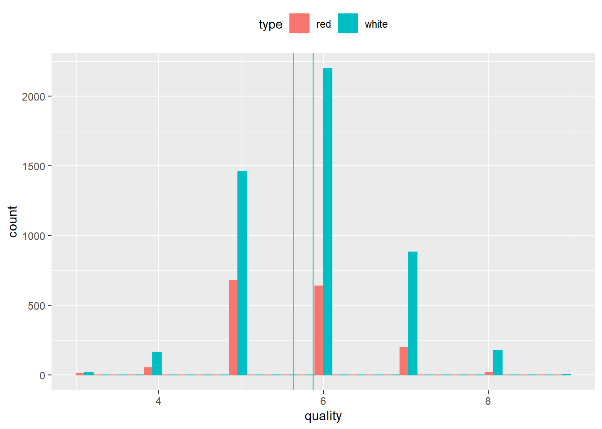
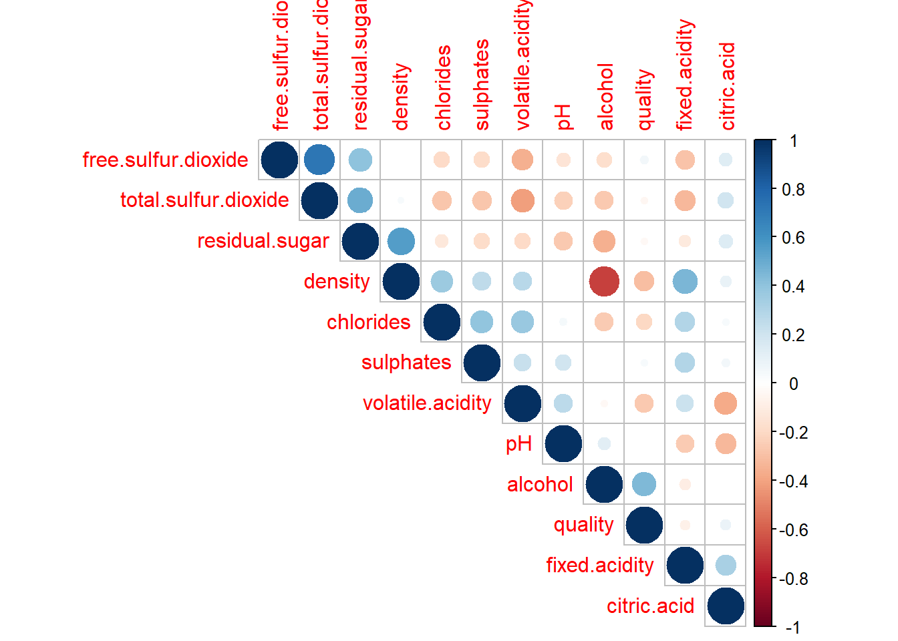
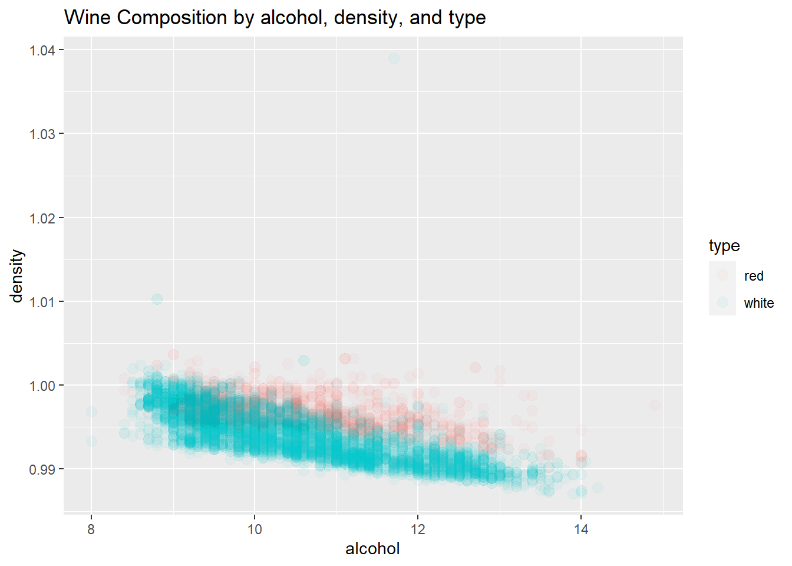
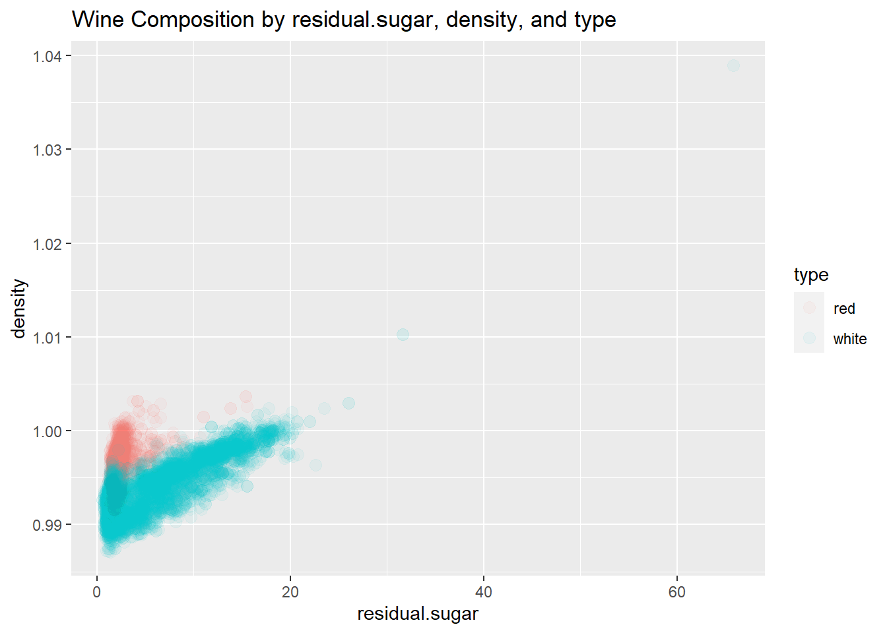

Chapter 2 Descriptive Statistics
2.1 Dataset
The dataset utilized for our analysis was collected from the UCI Machine Learning Repository P. Cortez and Reis. (2009). The dataset consists of 12 elements, 11 physiochemical properties and 1 subjective quality measurement, for both red and white Vinho Verde wine samples from Portugal.
Read in Data
redWine<-read.table("data/winequality-red.csv",stringsAsFactors = FALSE,
sep=",",header = TRUE)
whiteWine<-read.table("data/winequality-white.csv",stringsAsFactors = FALSE,
sep=";",header = TRUE)
# create a field that shows whether a wine is red or white based on initial
# datasets
redWine$type='red'
whiteWine$type='white'
# merge data
wine <- rbind(redWine, whiteWine)
str(wine)## 'data.frame': 6497 obs. of 13 variables:
## $ fixed.acidity : num 7.4 7.8 7.8 11.2 7.4 7.4 7.9 7.3 7.8 7.5 ...
## $ volatile.acidity : num 0.7 0.88 0.76 0.28 0.7 0.66 0.6 0.65 0.58 0.5 ...
## $ citric.acid : num 0 0 0.04 0.56 0 0 0.06 0 0.02 0.36 ...
## $ residual.sugar : num 1.9 2.6 2.3 1.9 1.9 1.8 1.6 1.2 2 6.1 ...
## $ chlorides : num 0.076 0.098 0.092 0.075 0.076 0.075 0.069 0.065 0.073 0.071 ...
## $ free.sulfur.dioxide : num 11 25 15 17 11 13 15 15 9 17 ...
## $ total.sulfur.dioxide: num 34 67 54 60 34 40 59 21 18 102 ...
## $ density : num 0.998 0.997 0.997 0.998 0.998 ...
## $ pH : num 3.51 3.2 3.26 3.16 3.51 3.51 3.3 3.39 3.36 3.35 ...
## $ sulphates : num 0.56 0.68 0.65 0.58 0.56 0.56 0.46 0.47 0.57 0.8 ...
## $ alcohol : num 9.4 9.8 9.8 9.8 9.4 9.4 9.4 10 9.5 10.5 ...
## $ quality : int 5 5 5 6 5 5 5 7 7 5 ...
## $ type : chr "red" "red" "red" "red" ...The table above shows the structure of our dataset before any sort of data manipulation, munging, or cleaning.
2.2 Exploratory Analysis
2.2.1 Descriptive Statistics
In order to better understand our data set we performed some initial descriptive statistics. A descriptive statistic is a summary level statistic, such as mean or median, that describes a variable or feature of a dataset. Descriptive statistics is the processing of analyzing the descriptive statistic taken from your dataset. “Descriptive Statistics” (n.d.)
The table below shows descriptive statistic measurements for each of the variables in our dataset.
stat.desc(wine)## fixed.acidity volatile.acidity citric.acid residual.sugar chlorides free.sulfur.dioxide
## nbr.val 6.497000e+03 6.497000e+03 6.497000e+03 6.497000e+03 6.497000e+03 6.497000e+03
## nbr.null 0.000000e+00 0.000000e+00 1.510000e+02 0.000000e+00 0.000000e+00 0.000000e+00
## nbr.na 0.000000e+00 0.000000e+00 0.000000e+00 0.000000e+00 0.000000e+00 0.000000e+00
## min 3.800000e+00 8.000000e-02 0.000000e+00 6.000000e-01 9.000000e-03 1.000000e+00
## max 1.590000e+01 1.580000e+00 1.660000e+00 6.580000e+01 6.110000e-01 2.890000e+02
## range 1.210000e+01 1.500000e+00 1.660000e+00 6.520000e+01 6.020000e-01 2.880000e+02
## sum 4.687785e+04 2.206810e+03 2.070160e+03 3.536470e+04 3.640520e+02 1.983230e+05
## median 7.000000e+00 2.900000e-01 3.100000e-01 3.000000e+00 4.700000e-02 2.900000e+01
## mean 7.215307e+00 3.396660e-01 3.186332e-01 5.443235e+00 5.603386e-02 3.052532e+01
## SE.mean 1.608399e-02 2.042536e-03 1.802862e-03 5.902692e-02 4.346387e-04 2.202050e-01
## CI.mean.0.95 3.152992e-02 4.004042e-03 3.534204e-03 1.157122e-01 8.520349e-04 4.316744e-01
## var 1.680740e+00 2.710517e-02 2.111728e-02 2.263670e+01 1.227353e-03 3.150412e+02
## std.dev 1.296434e+00 1.646365e-01 1.453179e-01 4.757804e+00 3.503360e-02 1.774940e+01
## coef.var 1.796783e-01 4.847011e-01 4.560663e-01 8.740764e-01 6.252220e-01 5.814648e-01
## total.sulfur.dioxide density pH sulphates alcohol quality type
## nbr.val 6.497000e+03 6.497000e+03 6.497000e+03 6.497000e+03 6.497000e+03 6.497000e+03 NA
## nbr.null 0.000000e+00 0.000000e+00 0.000000e+00 0.000000e+00 0.000000e+00 0.000000e+00 NA
## nbr.na 0.000000e+00 0.000000e+00 0.000000e+00 0.000000e+00 0.000000e+00 0.000000e+00 NA
## min 6.000000e+00 9.871100e-01 2.720000e+00 2.200000e-01 8.000000e+00 3.000000e+00 NA
## max 4.400000e+02 1.038980e+00 4.010000e+00 2.000000e+00 1.490000e+01 9.000000e+00 NA
## range 4.340000e+02 5.187000e-02 1.290000e+00 1.780000e+00 6.900000e+00 6.000000e+00 NA
## sum 7.519925e+05 6.462544e+03 2.091060e+04 3.451650e+03 6.816523e+04 3.780200e+04 NA
## median 1.180000e+02 9.948900e-01 3.210000e+00 5.100000e-01 1.030000e+01 6.000000e+00 NA
## mean 1.157446e+02 9.946966e-01 3.218501e+00 5.312683e-01 1.049180e+01 5.818378e+00 NA
## SE.mean 7.012292e-01 3.720255e-05 1.994780e-03 1.846136e-03 1.479718e-02 1.083390e-02 NA
## CI.mean.0.95 1.374640e+00 7.292924e-05 3.910426e-03 3.619034e-03 2.900735e-02 2.123801e-02 NA
## var 3.194720e+03 8.992040e-06 2.585252e-02 2.214319e-02 1.422561e+00 7.625748e-01 NA
## std.dev 5.652185e+01 2.998673e-03 1.607872e-01 1.488059e-01 1.192712e+00 8.732553e-01 NA
## coef.var 4.883326e-01 3.014661e-03 4.995717e-02 2.800955e-01 1.136804e-01 1.500857e-01 NAUnivariate Exploration
Univariate exploration explores each variable one by one. We can use univariate exploration to explore the distribution of a single variable or desriptive statistic.
The variables for the three plots below were selected judgmentally from the dataset to explore.
mu <- ddply(wine, "type", summarise, grp.mean=mean(alcohol))
g<-ggplot(wine, aes(x=alcohol, fill=type, color=type)) +
geom_histogram(position="dodge")+
theme(legend.position="top") +
geom_vline(data=mu, aes(xintercept=grp.mean, color=type))+
theme(legend.position="top")
g## `stat_bin()` using `bins = 30`. Pick better value with `binwidth`.
The table above shows the distribution of the alcohol variable for both red and white wines. We can see from the plot that alcohol does not appear to be normally distributed. The data points are primarily skewed to the left with a lower alcohol percentage. This makes sense as there are about three times as many white wine samples within our data set and white wine tends to have a lower alcohol percentage than red wine.
mu <- ddply(wine, "type", summarise, grp.mean=mean(volatile.acidity))
g<-ggplot(wine, aes(x=volatile.acidity, fill=type, color=type)) +
geom_histogram(position="dodge")+
theme(legend.position="top") +
geom_vline(data=mu, aes(xintercept=grp.mean, color=type))+
theme(legend.position="top")
g## `stat_bin()` using `bins = 30`. Pick better value with `binwidth`.
Volatile acidity is the amount of acetic acid in wine. Too high of a level of volatile acid can lead to an unpleasant, vinegar taste.
The distribution of volatile acidity measurements within red wine appeared to be fairly normally distributed, while the distribution in volatile acidity within white wine was skewed harshly to the right. However, both red and white wine samples had long tails which indicate there may be some outliers in the data set with higher levels of volatile acidity than normal.
mu <- ddply(wine, "type", summarise, grp.mean=mean(quality))
g<-ggplot(wine, aes(x=quality, fill=type, color=type)) +
geom_histogram(position="dodge")+
theme(legend.position="top") +
geom_vline(data=mu, aes(xintercept=grp.mean, color=type))+
theme(legend.position="top")
g## `stat_bin()` using `bins = 30`. Pick better value with `binwidth`.
Finally, we plotted the quality, our outcome variable, of the wine samples. As you can see from the charts above both the red and white wine samples had a normal distribution of quality values. This is important to note as the tests we will be performing require or assume normally distributed outcome variable values.
Bivariate Exploration
Bivariate exploration allows us to explore the relationship between two descriptive statistics in a dataset.
To better determine which variable relationships we should look more closely at, we ran a correlation analysis.
# exclude the type of wine from the correlation variables
res <- rcorr(as.matrix(wine[,1:12]))
corr <- flattenCorrMatrix(res$r, res$P)
corr[order(corr[,3],decreasing=TRUE),]## row column cor p
## 21 free.sulfur.dioxide total.sulfur.dioxide 0.720934081 0.000000e+00
## 25 residual.sugar density 0.552516950 0.000000e+00
## 19 residual.sugar total.sulfur.dioxide 0.495481587 0.000000e+00
## 22 fixed.acidity density 0.458909982 0.000000e+00
## 66 alcohol quality 0.444318520 0.000000e+00
## 14 residual.sugar free.sulfur.dioxide 0.402870640 0.000000e+00
## 41 chlorides sulphates 0.395593307 0.000000e+00
## 8 volatile.acidity chlorides 0.377124276 0.000000e+00
## 26 chlorides density 0.362614656 0.000000e+00
## 2 fixed.acidity citric.acid 0.324435725 0.000000e+00
## 37 fixed.acidity sulphates 0.299567744 0.000000e+00
## 7 fixed.acidity chlorides 0.298194772 0.000000e+00
## 23 volatile.acidity density 0.271295648 0.000000e+00
## 30 volatile.acidity pH 0.261454403 0.000000e+00
## 44 density sulphates 0.259478495 0.000000e+00
## 38 volatile.acidity sulphates 0.225983680 0.000000e+00
## 1 fixed.acidity volatile.acidity 0.219008256 0.000000e+00
## 18 citric.acid total.sulfur.dioxide 0.195241976 0.000000e+00
## 45 pH sulphates 0.192123407 0.000000e+00
## 6 citric.acid residual.sugar 0.142451226 0.000000e+00
## 13 citric.acid free.sulfur.dioxide 0.133125810 0.000000e+00
## 54 pH alcohol 0.121248467 0.000000e+00
## 24 citric.acid density 0.096153929 7.993606e-15
## 58 citric.acid quality 0.085531717 5.001777e-12
## 39 citric.acid sulphates 0.056197300 5.830741e-06
## 61 free.sulfur.dioxide quality 0.055463059 7.708445e-06
## 33 chlorides pH 0.044707980 3.124540e-04
## 9 citric.acid chlorides 0.038998014 1.666635e-03
## 65 sulphates quality 0.038485446 1.918079e-03
## 28 total.sulfur.dioxide density 0.032394512 9.019631e-03
## 27 free.sulfur.dioxide density 0.025716842 3.818871e-02
## 64 pH quality 0.019505704 1.159310e-01
## 36 density pH 0.011686081 3.462974e-01
## 55 sulphates alcohol -0.003029195 8.071389e-01
## 48 citric.acid alcohol -0.010493492 3.977326e-01
## 59 residual.sugar quality -0.036980485 2.871025e-03
## 47 volatile.acidity alcohol -0.037640386 2.409699e-03
## 62 total.sulfur.dioxide quality -0.041385454 8.480397e-04
## 56 fixed.acidity quality -0.076743208 5.874849e-10
## 46 fixed.acidity alcohol -0.095451523 1.243450e-14
## 4 fixed.acidity residual.sugar -0.111981281 0.000000e+00
## 10 residual.sugar chlorides -0.128940500 0.000000e+00
## 34 free.sulfur.dioxide pH -0.145853896 0.000000e+00
## 51 free.sulfur.dioxide alcohol -0.179838435 0.000000e+00
## 40 residual.sugar sulphates -0.185927405 0.000000e+00
## 42 free.sulfur.dioxide sulphates -0.188457249 0.000000e+00
## 15 chlorides free.sulfur.dioxide -0.195044785 0.000000e+00
## 5 volatile.acidity residual.sugar -0.196011174 0.000000e+00
## 60 chlorides quality -0.200665500 0.000000e+00
## 35 total.sulfur.dioxide pH -0.238413103 0.000000e+00
## 29 fixed.acidity pH -0.252700468 0.000000e+00
## 50 chlorides alcohol -0.256915580 0.000000e+00
## 57 volatile.acidity quality -0.265699478 0.000000e+00
## 52 total.sulfur.dioxide alcohol -0.265739639 0.000000e+00
## 32 residual.sugar pH -0.267319837 0.000000e+00
## 43 total.sulfur.dioxide sulphates -0.275726820 0.000000e+00
## 20 chlorides total.sulfur.dioxide -0.279630447 0.000000e+00
## 11 fixed.acidity free.sulfur.dioxide -0.282735428 0.000000e+00
## 63 density quality -0.305857906 0.000000e+00
## 16 fixed.acidity total.sulfur.dioxide -0.329053901 0.000000e+00
## 31 citric.acid pH -0.329808191 0.000000e+00
## 12 volatile.acidity free.sulfur.dioxide -0.352557306 0.000000e+00
## 49 residual.sugar alcohol -0.359414771 0.000000e+00
## 3 volatile.acidity citric.acid -0.377981317 0.000000e+00
## 17 volatile.acidity total.sulfur.dioxide -0.414476195 0.000000e+00
## 53 density alcohol -0.686745421 0.000000e+00From the flatted correlation matrix above, we can see that the elements with the highest correlation are: - Free Sulfur Dioxide and Total Sulfur Dioxide. This is intuitive as free sulfur dioxide is a subset of the total sulfur dioxide. - Residual Sugar and Density. This also is intuitive as the fermentable sugars (residual sugar) can increase the density of wine.
Visualize Correlations
# Insignificant correlations are left blank
corrplot(res$r, type="upper", order="hclust",
p.mat = res$P, sig.level = 0.01, insig = "blank")
Based on the correlation matrix and the correlation plots it appears that there is a strong negative correlation between alcohol and density and a strong positive correlation between residual sugar and density. These are plotted below.
ggplot(wine,
aes(x = alcohol,
y = density,
color = type)) +
geom_point(size = 3,
alpha = .05) +
labs(title = "Wine Composition by alcohol, density, and type")
ggplot(wine,
aes(x = residual.sugar,
y = density,
color = type)) +
geom_point(size = 3,
alpha = .05) +
labs(title = "Wine Composition by residual.sugar, density, and type")